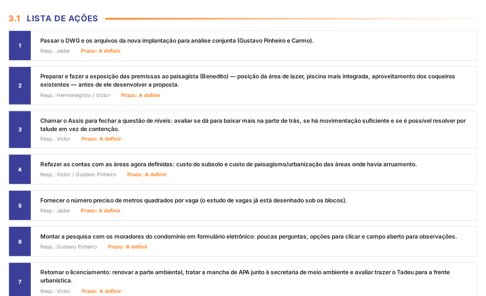

O fluxo de prospecção no ClickUp
A primeira etapa construída, e o tamanho do caminho que ela abre. Preparado por Arvo Gestão e Consultoria · 19/08/2026
Quatorze etapas separam o primeiro dado de um terreno da entrega das chaves. Duas estão construídas e rodando. As outras doze já existem como classificação, então nenhuma tarefa futura nasce sem lugar.
| Etapa | Situação | Etapa | Situação |
|---|---|---|---|
| 01. Levantamento de Dados | No ar | 08. Licenciamento | Mapeada |
| 02. Estudo de Massa | No ar | 09. Registro de Incorporação | Mapeada |
| 03. Viabilidade Inicial GO/NO GO | Mapeada | 10. Lançamento do Empreendimento | Mapeada |
| 04. Aquisição de Terreno | Mapeada | 11. Financiamento Bancário | Mapeada |
| 05. Concepção do Produto | Mapeada | 12. BackOffice | Mapeada |
| 06. Viabilidade e Orçamento | Mapeada | 13. Preparação para Obra | Mapeada |
| 07. Projetos | Mapeada | 14. Pós-Entrega | Mapeada |
A prospecção é a etapa 01 somada à 02, e responde uma pergunta só: este terreno serve? Para responder é preciso documentação, zoneamento, mercado e conta fechada, e cada uma dessas quatro coisas mora com uma pessoa diferente. O fluxo existe para que a resposta não dependa de quem está na sala no dia.
A prospecção não chegou como lista de afazeres em branco. Ela chegou com o método já escrito dentro, e com doze travas que ligam uma tarefa à outra: enquanto a anterior não fecha, a seguinte não abre, e quem tentar pular recebe o aviso na hora.
Exemplo real: a tarefa 01.02. Obter dados Legais do Terreno, aberta.
Checklist de dados legais do terreno
- Escritura ou título aquisitivo
- Certidão da matrícula, última averbação, com áreas e dimensões
- Ficha do imóvel na prefeitura ou cadastro do Incra
- Preenchimento do checklist "Dados Legais"
- Validação da documentação física do terreno
- Parecer sobre a documentação legal
Seis itens, nenhum deles lembrado de cabeça. Quem assume a tarefa encontra a lista pronta e vai marcando. São 15 listas como essa só dentro da prospecção, e cabe uma em cada uma das quatorze etapas.
Um empreendimento leva anos entre o primeiro terreno e a entrega, e no caminho a informação se perde: quem pediu a certidão, qual versão do projeto foi aprovada, por que o orçamento mudou. O checklist não cria trabalho. Ele evita o retrabalho de descobrir tudo de novo.
Dez campos acompanham cada tarefa. São eles que transformam conversa em rastro.
| Campo | O que registra | Valores |
|---|---|---|
| Parecer | A decisão tomada | Aprovado · Reprovado · Aprovado com ressalvas |
| Exige parecer? | Se a tarefa precisa de decisão formal | Sim · Não |
| Aplicação | Se a tarefa vale para este empreendimento | Aplicável · Não aplicável |
| Fase de Projeto | Em que estágio o projeto está | Oito fases, de a iniciar a concluídas |
| Protocolo 1 e 2 | Número do protocolo no órgão | Texto livre |
| Data Protocolo 1 | Quando foi protocolado | Data |
| Links e Anexos | O documento que sustenta a decisão | Endereço e arquivo |
Daqui a um ano dá para saber quem aprovou o quê, quando, e com base em qual documento, sem depender da memória de ninguém nem de uma conversa arquivada.
Duas medidas do que muda quando o processo sai da cabeça das pessoas e passa a morar na ferramenta. A da esquerda é rigor: quantas conferências cada tarefa cobra antes de deixar alguém dar a etapa por encerrada. A da direita é tempo: quanto do trabalho de montar o processo você faz uma vez só.
São 61 conferências e 12 travas de ordem que impedem uma etapa de começar antes de a anterior fechar. O ganho de tempo vem depois: o primeiro empreendimento paga a montagem, e do segundo em diante sobra pouco mais de um quinto de trabalho novo.
A view Fase Legal é onde o dia acontece: as tarefas agrupadas pela etapa de desenvolvimento, com os campos de registro visíveis na própria linha.
view Fase Legal, lista agrupada por Etapas Desenvolvimento
A mesma informação, vista de outro ângulo. O Quadro Fases mostra as tarefas como cartões por situação, e serve para a reunião semanal, quando a pergunta é o que está parado e por quê.
view Quadro Fases, board por situação
Existe ainda uma terceira visão, Novidades, que registra o que mudou e quem mudou, sem ninguém precisar avisar.
O ClickUp guarda o que foi combinado. Quem alimenta ainda é gente, e é aí que a maioria das implantações morre: a reunião acontece, a decisão fica na cabeça de quem estava lá e ninguém tem tempo de virar aquilo em tarefa. Este trecho já roda hoje, em operação de incorporação, e é o que mantém o quadro vivo depois do terceiro mês.

Ninguém escreve ata, ninguém redigita tarefa, ninguém persegue quem está devendo e ninguém monta relatório à mão. E nada disso inventa dado: sem etapa, campo e responsável, a IA não tem em cima de que trabalhar.
A prospecção é a agulha. O palheiro é o empreendimento inteiro. Numa operação com as quatorze etapas montadas, um único empreendimento carrega de 121 a 536 tarefas entre principais e subtarefas, e o processo é o mesmo de um terreno para o outro: de 76% a 87% das tarefas se repetem com o mesmo nome. O segundo empreendimento custa uma fração do primeiro.
O que roda ao redor das etapas
- Registro de incorporação: a montagem do RGI e o acompanhamento até o registro.
- Controle de licenças: cada alvará e cada prazo com dono e vencimento.
- Fluxo de projetos: as disciplinas, as versões e as aprovações.
- Personalização de unidades: pedido do cliente virando ordem de obra.
- Comercial e marketing: lançamento, campanha e ata de reunião.
- BackOffice financeiro: o dinheiro amarrado ao que a obra consome.
- Sprint mensal por equipe: o que cada frente entrega no mês.
A ordem natural é seguir o terreno: viabilidade e GO/NO GO, aquisição, concepção do produto. Cada etapa nova entra do mesmo jeito, e a anterior continua funcionando enquanto isso.
O método deixou o papel
A prospecção da Brisa está construída, com as travas de ordem, as checagens e os campos de registro. As outras doze etapas já têm lugar reservado, e entram do mesmo jeito quando for a hora.
Arvo Gestão e Consultoria